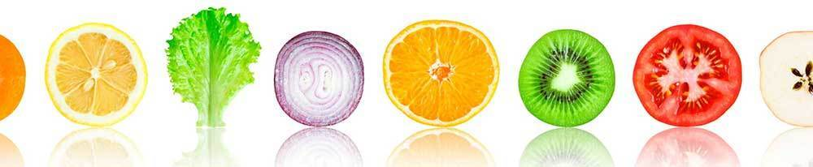
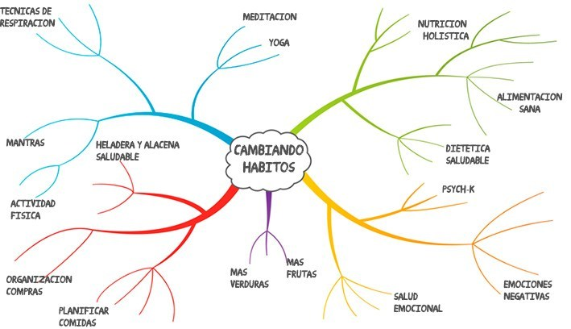

¿Suena muy utópico? ¿Demasiado simplista? No te voy a mentir. No es fácil y hay días mejores que otros.
Pero te puedo asegurar que si tomaste la decisión de salir de esa rutina tóxica en la que estás y estás buscando opciones diferentes para lograr resultados diferentes, ya tenés la mitad del camino ganado.
Las mismas herramientas que hoy comparto con vos son las que realmente cambiaron mi vida pero... dejáme contarte cómo fue ese proceso.

Mi historia con la Nutrición y los Hábitos Alimenticios
Recuerdo el día en que me diagnosticaron tiroiditis crónica, o enfermedad de Hashimoto. Sabía que era una enfermedad autoinmune donde tu propio sistema inmunológico te ataca. En mi caso, había aparecido en un momento de gran stress y ansiedad en mi vida y la única solución que me daban los médicos era medicarme todos los días por el resto de mi vida.
Estaba cansada de subir de peso sin razón, sentirme agotada y sin energía y muchas veces deprimida, pero no estaba dispuesta a medicarme sin intentar algo más primero.
Por eso decidí involucrarme, hacerme cargo de mi salud y empezar a aprender sobre mi compañera “tiroiditis”.
Descubrí que la glandula tiroidea es muy susceptible a las toxinas que entran en tu cuerpo
en forma de comida chatarra o ultraprocesada, emociones negativas como el stress y
la ansiedad, y toda situación que genere un desequilibrio en tu organismo.
Decidí también estudiar Nutrición Naturista, zambullirme en la lectura de libros que me contaran sobre Nutrición Holistica (alimentación natural que se enfoca en la salud emocional, espiritual y física) y ponerme en contacto con técnicas que me ayudaran a estar en eje (meditación, yoga, técnicas de respiración, etc)

Yo era mi propio conejillo de indias, experimentando e incorporando hábitos que me ayudaran a sanar. Fue un proceso largo, pero logré que mi glándula tiroidea comenzara a funcionar normalmente.
Incluso mejoré aspectos de mi vida que ni siquiera pensaba que estaban mal. Me sentía más vital y con más energía que nunca, aprendí a decir que no a las cosas que no me gustaban y comencé a desintoxicar mi entorno de gente y situaciones negativas.
El cambio en mi vida comenzó con la alimentacion y se transformó
en un cambio hacia un estilo de vida mucho más sano y más feliz.
Si llegaste hasta acá en busca de una opción distinta y poder finalmente generar cambios permanentes en tu vida, esto es para vos